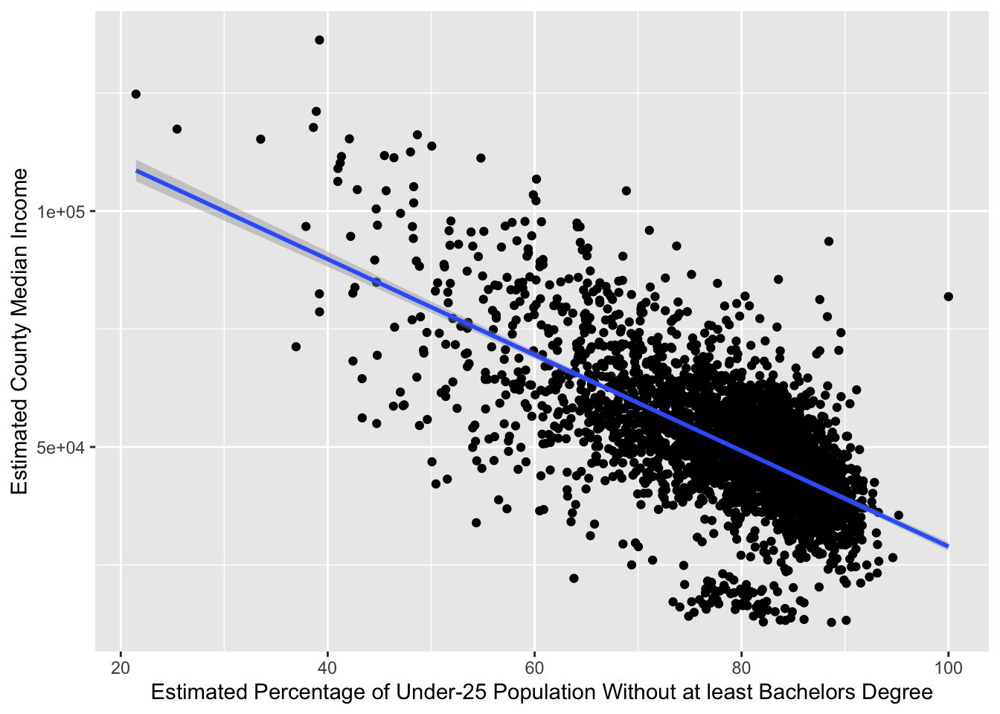
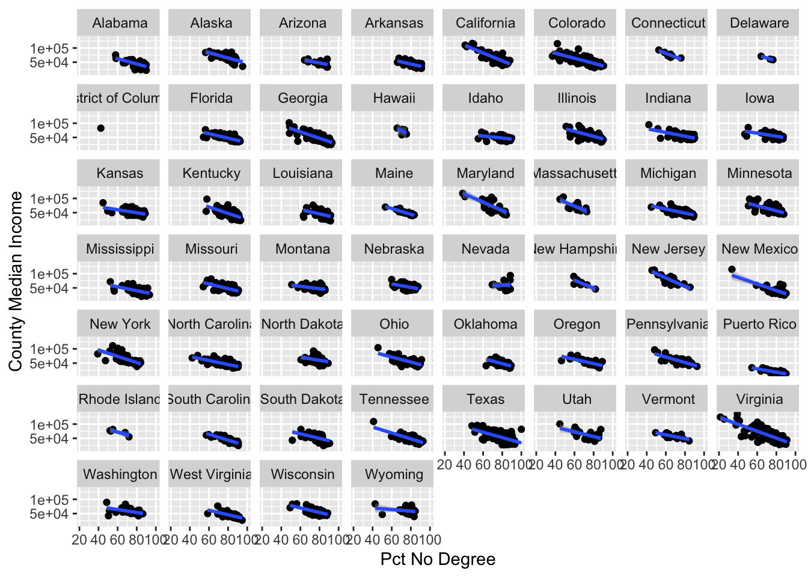

13 Bivariate Analysis with ACS Data: Education and Income
What is the relationship between county median income, and county share of the over-25 population without at least a bachelor’s degree?
First, let’s inspect the variable codes for the 2018 ACS:
ACS_5_2018<-load_variables(2018, "acs5")education_variables<-ACS_5_2018 %>% filter(str_detect(name, 'B15003'))View(education_variables)kable(education_variables)| name | label | concept |
|---|---|---|
| B15003_001 | Estimate!!Total | EDUCATIONAL ATTAINMENT FOR THE POPULATION 25 YEARS AND OVER |
| B15003_002 | Estimate!!Total!!No schooling completed | EDUCATIONAL ATTAINMENT FOR THE POPULATION 25 YEARS AND OVER |
| B15003_003 | Estimate!!Total!!Nursery school | EDUCATIONAL ATTAINMENT FOR THE POPULATION 25 YEARS AND OVER |
| B15003_004 | Estimate!!Total!!Kindergarten | EDUCATIONAL ATTAINMENT FOR THE POPULATION 25 YEARS AND OVER |
| B15003_005 | Estimate!!Total!!1st grade | EDUCATIONAL ATTAINMENT FOR THE POPULATION 25 YEARS AND OVER |
| B15003_006 | Estimate!!Total!!2nd grade | EDUCATIONAL ATTAINMENT FOR THE POPULATION 25 YEARS AND OVER |
| B15003_007 | Estimate!!Total!!3rd grade | EDUCATIONAL ATTAINMENT FOR THE POPULATION 25 YEARS AND OVER |
| B15003_008 | Estimate!!Total!!4th grade | EDUCATIONAL ATTAINMENT FOR THE POPULATION 25 YEARS AND OVER |
| B15003_009 | Estimate!!Total!!5th grade | EDUCATIONAL ATTAINMENT FOR THE POPULATION 25 YEARS AND OVER |
| B15003_010 | Estimate!!Total!!6th grade | EDUCATIONAL ATTAINMENT FOR THE POPULATION 25 YEARS AND OVER |
| B15003_011 | Estimate!!Total!!7th grade | EDUCATIONAL ATTAINMENT FOR THE POPULATION 25 YEARS AND OVER |
| B15003_012 | Estimate!!Total!!8th grade | EDUCATIONAL ATTAINMENT FOR THE POPULATION 25 YEARS AND OVER |
| B15003_013 | Estimate!!Total!!9th grade | EDUCATIONAL ATTAINMENT FOR THE POPULATION 25 YEARS AND OVER |
| B15003_014 | Estimate!!Total!!10th grade | EDUCATIONAL ATTAINMENT FOR THE POPULATION 25 YEARS AND OVER |
| B15003_015 | Estimate!!Total!!11th grade | EDUCATIONAL ATTAINMENT FOR THE POPULATION 25 YEARS AND OVER |
| B15003_016 | Estimate!!Total!!12th grade, no diploma | EDUCATIONAL ATTAINMENT FOR THE POPULATION 25 YEARS AND OVER |
| B15003_017 | Estimate!!Total!!Regular high school diploma | EDUCATIONAL ATTAINMENT FOR THE POPULATION 25 YEARS AND OVER |
| B15003_018 | Estimate!!Total!!GED or alternative credential | EDUCATIONAL ATTAINMENT FOR THE POPULATION 25 YEARS AND OVER |
| B15003_019 | Estimate!!Total!!Some college, less than 1 year | EDUCATIONAL ATTAINMENT FOR THE POPULATION 25 YEARS AND OVER |
| B15003_020 | Estimate!!Total!!Some college, 1 or more years, no degree | EDUCATIONAL ATTAINMENT FOR THE POPULATION 25 YEARS AND OVER |
| B15003_021 | Estimate!!Total!!Associate’s degree | EDUCATIONAL ATTAINMENT FOR THE POPULATION 25 YEARS AND OVER |
| B15003_022 | Estimate!!Total!!Bachelor’s degree | EDUCATIONAL ATTAINMENT FOR THE POPULATION 25 YEARS AND OVER |
| B15003_023 | Estimate!!Total!!Master’s degree | EDUCATIONAL ATTAINMENT FOR THE POPULATION 25 YEARS AND OVER |
| B15003_024 | Estimate!!Total!!Professional school degree | EDUCATIONAL ATTAINMENT FOR THE POPULATION 25 YEARS AND OVER |
| B15003_025 | Estimate!!Total!!Doctorate degree | EDUCATIONAL ATTAINMENT FOR THE POPULATION 25 YEARS AND OVER |
education_vars<-c(Bachelors="B15003_022", Masters="B15003_023", Professional="B15003_024",
Doctorate="B15003_025")
education_acs_2018<-get_acs(geography="county",
year=2018,
variables=education_vars,
summary_var="B15003_001")## Getting data from the 2014-2018 5-year ACSeducation_acs_2018## # A tibble: 12,880 x 7
## GEOID NAME variable estimate moe summary_est summary_moe
## <chr> <chr> <chr> <dbl> <dbl> <dbl> <dbl>
## 1 01001 Autauga County, Alabama Bachelors 5903 611 37166 115
## 2 01001 Autauga County, Alabama Masters 3406 418 37166 115
## 3 01001 Autauga County, Alabama Professional 510 237 37166 115
## 4 01001 Autauga County, Alabama Doctorate 472 190 37166 115
## 5 01003 Baldwin County, Alabama Bachelors 30431 1278 146989 282
## 6 01003 Baldwin County, Alabama Masters 11338 832 146989 282
## 7 01003 Baldwin County, Alabama Professional 2992 471 146989 282
## 8 01003 Baldwin County, Alabama Doctorate 1314 267 146989 282
## 9 01005 Barbour County, Alabama Bachelors 1417 208 18173 81
## 10 01005 Barbour County, Alabama Masters 606 122 18173 81
## # … with 12,870 more rowspct_less_than_BA<-education_acs_2018 %>%
group_by(GEOID, NAME) %>%
mutate(no_degree_pct=((summary_est-sum(estimate))/(summary_est)*100)) %>%
summarize(mean(no_degree_pct)) %>%
rename(no_degree_pct="mean(no_degree_pct)")## `summarise()` has grouped output by 'GEOID'. You can override using the `.groups` argument.pct_less_than_BA## # A tibble: 3,220 x 3
## # Groups: GEOID [3,220]
## GEOID NAME no_degree_pct
## <chr> <chr> <dbl>
## 1 01001 Autauga County, Alabama 72.3
## 2 01003 Baldwin County, Alabama 68.7
## 3 01005 Barbour County, Alabama 87.8
## 4 01007 Bibb County, Alabama 88.5
## 5 01009 Blount County, Alabama 87.4
## 6 01011 Bullock County, Alabama 86.7
## 7 01013 Butler County, Alabama 83.9
## 8 01015 Calhoun County, Alabama 82.0
## 9 01017 Chambers County, Alabama 86.8
## 10 01019 Cherokee County, Alabama 87.1
## # … with 3,210 more rowsmedian_income_2018<-get_acs(geography="county",
variables="B19013_001",
year=2018) %>%
rename(median_income=estimate) %>%
arrange(desc(median_income))## Getting data from the 2014-2018 5-year ACSmedian_income_nodegree<-full_join(median_income_2018, pct_less_than_BA,by="GEOID")median_income_nodegree## # A tibble: 3,220 x 7
## GEOID NAME.x variable median_income moe NAME.y no_degree_pct
## <chr> <chr> <chr> <dbl> <dbl> <chr> <dbl>
## 1 51107 Loudoun County, Virginia B19013_0… 136268 2063 Loudoun County, Virginia 39.2
## 2 51610 Falls Church city, Virginia B19013_0… 124796 15295 Falls Church city, Virginia 21.5
## 3 51059 Fairfax County, Virginia B19013_0… 121133 1144 Fairfax County, Virginia 38.9
## 4 24027 Howard County, Maryland B19013_0… 117730 2023 Howard County, Maryland 38.6
## 5 51013 Arlington County, Virginia B19013_0… 117374 2067 Arlington County, Virginia 25.4
## 6 06085 Santa Clara County, California B19013_0… 116178 938 Santa Clara County, Californ… 48.7
## 7 08035 Douglas County, Colorado B19013_0… 115314 2028 Douglas County, Colorado 42.1
## 8 35028 Los Alamos County, New Mexico B19013_0… 115248 7220 Los Alamos County, New Mexico 33.5
## 9 06081 San Mateo County, California B19013_0… 113776 1672 San Mateo County, California 50.1
## 10 34019 Hunterdon County, New Jersey B19013_0… 112535 2409 Hunterdon County, New Jersey 48.0
## # … with 3,210 more rowsmedianincome_nodegree_viz<-median_income_nodegree %>%
ggplot()+
geom_point(aes(x=no_degree_pct,y=median_income))+
geom_smooth(aes(x=no_degree_pct,y=median_income),method="lm")+
ylab("Estimated County Median Income")+
xlab("Estimated Percentage of Under-25 Population Without at least Bachelors Degree")medianincome_nodegree_viz## `geom_smooth()` using formula 'y ~ x'## Warning: Removed 1 rows containing non-finite values (stat_smooth).## Warning: Removed 1 rows containing missing values (geom_point).
median_income_nodegree<-median_income_nodegree %>%
separate(NAME.x,c("County","State"),sep=",")
median_income_nodegree## # A tibble: 3,220 x 8
## GEOID County State variable median_income moe NAME.y no_degree_pct
## <chr> <chr> <chr> <chr> <dbl> <dbl> <chr> <dbl>
## 1 51107 Loudoun County " Virginia" B19013_001 136268 2063 Loudoun County, Virginia 39.2
## 2 51610 Falls Church city " Virginia" B19013_001 124796 15295 Falls Church city, Virginia 21.5
## 3 51059 Fairfax County " Virginia" B19013_001 121133 1144 Fairfax County, Virginia 38.9
## 4 24027 Howard County " Maryland" B19013_001 117730 2023 Howard County, Maryland 38.6
## 5 51013 Arlington County " Virginia" B19013_001 117374 2067 Arlington County, Virginia 25.4
## 6 06085 Santa Clara Coun… " California" B19013_001 116178 938 Santa Clara County, Califo… 48.7
## 7 08035 Douglas County " Colorado" B19013_001 115314 2028 Douglas County, Colorado 42.1
## 8 35028 Los Alamos County " New Mexico" B19013_001 115248 7220 Los Alamos County, New Mex… 33.5
## 9 06081 San Mateo County " California" B19013_001 113776 1672 San Mateo County, Californ… 50.1
## 10 34019 Hunterdon County " New Jersey" B19013_001 112535 2409 Hunterdon County, New Jers… 48.0
## # … with 3,210 more rowsmedianincome_nodegree_statefacets_viz<-median_income_nodegree %>%
ggplot()+
geom_point(aes(x=no_degree_pct,y=median_income))+
geom_smooth(aes(x=no_degree_pct,y=median_income),method="lm")+
ylab("County Median Income")+
xlab("Pct No Degree")+
facet_wrap(~State)medianincome_nodegree_statefacets_viz## `geom_smooth()` using formula 'y ~ x'## Warning: Removed 1 rows containing non-finite values (stat_smooth).## Warning: Removed 1 rows containing missing values (geom_point).
Nested dataset
median_income_nodegree_nested<-median_income_nodegree %>%
group_by(State) %>%
nest() %>%
arrange(State)
median_income_nodegree_nested## # A tibble: 52 x 2
## # Groups: State [52]
## State data
## <chr> <list>
## 1 " Alabama" <tibble [67 × 7]>
## 2 " Alaska" <tibble [29 × 7]>
## 3 " Arizona" <tibble [15 × 7]>
## 4 " Arkansas" <tibble [75 × 7]>
## 5 " California" <tibble [58 × 7]>
## 6 " Colorado" <tibble [64 × 7]>
## 7 " Connecticut" <tibble [8 × 7]>
## 8 " Delaware" <tibble [3 × 7]>
## 9 " District of Columbia" <tibble [1 × 7]>
## 10 " Florida" <tibble [67 × 7]>
## # … with 42 more rowsmedian_income_nodegree_nested %>% pull(2) %>% pluck(1)## # A tibble: 67 x 7
## GEOID County variable median_income moe NAME.y no_degree_pct
## <chr> <chr> <chr> <dbl> <dbl> <chr> <dbl>
## 1 01117 Shelby County B19013_001 75761 1348 Shelby County, Alabama 57.9
## 2 01089 Madison County B19013_001 63417 1447 Madison County, Alabama 58.3
## 3 01051 Elmore County B19013_001 59347 2721 Elmore County, Alabama 75.5
## 4 01001 Autauga County B19013_001 58786 2972 Autauga County, Alabama 72.3
## 5 01083 Limestone County B19013_001 56460 3118 Limestone County, Alabama 74.5
## 6 01003 Baldwin County B19013_001 55962 1204 Baldwin County, Alabama 68.7
## 7 01115 St. Clair County B19013_001 54887 2057 St. Clair County, Alabama 83.5
## 8 01031 Coffee County B19013_001 53155 2474 Coffee County, Alabama 76.6
## 9 01125 Tuscaloosa County B19013_001 52221 1240 Tuscaloosa County, Alabama 69.7
## 10 01073 Jefferson County B19013_001 51979 687 Jefferson County, Alabama 67.6
## # … with 57 more rowsmedian_income_nodegree_nested %>% pull("data") %>% pluck(6)## # A tibble: 64 x 7
## GEOID County variable median_income moe NAME.y no_degree_pct
## <chr> <chr> <chr> <dbl> <dbl> <chr> <dbl>
## 1 08035 Douglas County B19013_001 115314 2028 Douglas County, Colorado 42.1
## 2 08039 Elbert County B19013_001 96658 4279 Elbert County, Colorado 64.1
## 3 08014 Broomfield County B19013_001 89624 4013 Broomfield County, Colorado 44.5
## 4 08037 Eagle County B19013_001 84685 4478 Eagle County, Colorado 51.9
## 5 08059 Jefferson County B19013_001 78943 1142 Jefferson County, Colorado 55.9
## 6 08013 Boulder County B19013_001 78642 1583 Boulder County, Colorado 39.2
## 7 08117 Summit County B19013_001 77589 4772 Summit County, Colorado 49.0
## 8 08047 Gilpin County B19013_001 75120 6107 Gilpin County, Colorado 61.3
## 9 08107 Routt County B19013_001 74273 3839 Routt County, Colorado 49.6
## 10 08005 Arapahoe County B19013_001 73925 902 Arapahoe County, Colorado 57.8
## # … with 54 more rowsAdd median income range
median_income_range<-function(x){
max_median_income<-x %>% slice_max(median_income, n=1)
min_median_income<-x %>% slice_min(median_income, n=1)
range<-max_median_income$median_income-min_median_income$median_income
return(range)
}
median_income_nodegree_nested<-median_income_nodegree_nested %>%
mutate(county_income_range=map_dbl(data, median_income_range))median_income_nodegree_nested## # A tibble: 52 x 3
## # Groups: State [52]
## State data county_income_range
## <chr> <list> <dbl>
## 1 " Alabama" <tibble [67 × 7]> 53957
## 2 " Alaska" <tibble [29 × 7]> 52674
## 3 " Arizona" <tibble [15 × 7]> 28643
## 4 " Arkansas" <tibble [75 × 7]> 35774
## 5 " California" <tibble [58 × 7]> 77681
## 6 " Colorado" <tibble [64 × 7]> 84721
## 7 " Connecticut" <tibble [8 × 7]> 28195
## 8 " Delaware" <tibble [3 × 7]> 12221
## 9 " District of Columbia" <tibble [1 × 7]> 0
## 10 " Florida" <tibble [67 × 7]> 42740
## # … with 42 more rows# Five states with highest spatial inequality with respect to county median income
median_income_nodegree_nested %>% ungroup() %>% slice_max(county_income_range, n=5)## # A tibble: 5 x 3
## State data county_income_range
## <chr> <list> <dbl>
## 1 " Virginia" <tibble [133 × 7]> 108197
## 2 " New Mexico" <tibble [33 × 7]> 91163
## 3 " Colorado" <tibble [64 × 7]> 84721
## 4 " Tennessee" <tibble [95 × 7]> 80036
## 5 " California" <tibble [58 × 7]> 77681# Five states with lowest spatial inequality with respect to county median income
median_income_nodegree_nested %>% ungroup() %>% slice_min(county_income_range, n=5)## # A tibble: 5 x 3
## State data county_income_range
## <chr> <list> <dbl>
## 1 " District of Columbia" <tibble [1 × 7]> 0
## 2 " Delaware" <tibble [3 × 7]> 12221
## 3 " Puerto Rico" <tibble [78 × 7]> 21125
## 4 " Hawaii" <tibble [5 × 7]> 23609
## 5 " Rhode Island" <tibble [5 × 7]> 26068correlation_income_ed<-function(x){
income<-x$median_income
education<-x$no_degree_pct
corr_table<-cor.test(income, education)
return(corr_table)
}
median_income_nodegree_nested_final<-
median_income_nodegree_nested %>%
filter(county_income_range>0) %>%
mutate(correlation_education_income=map(data, correlation_income_ed))median_income_nodegree_nested_final## # A tibble: 51 x 4
## # Groups: State [51]
## State data county_income_range correlation_education_income
## <chr> <list> <dbl> <list>
## 1 " Alabama" <tibble [67 × 7]> 53957 <htest>
## 2 " Alaska" <tibble [29 × 7]> 52674 <htest>
## 3 " Arizona" <tibble [15 × 7]> 28643 <htest>
## 4 " Arkansas" <tibble [75 × 7]> 35774 <htest>
## 5 " California" <tibble [58 × 7]> 77681 <htest>
## 6 " Colorado" <tibble [64 × 7]> 84721 <htest>
## 7 " Connecticut" <tibble [8 × 7]> 28195 <htest>
## 8 " Delaware" <tibble [3 × 7]> 12221 <htest>
## 9 " Florida" <tibble [67 × 7]> 42740 <htest>
## 10 " Georgia" <tibble [159 × 7]> 76743 <htest>
## # … with 41 more rows# Alabama correlation coefficient table
median_income_nodegree_nested_final %>% pull(4) %>% pluck(1)##
## Pearson's product-moment correlation
##
## data: income and education
## t = -7.8769, df = 65, p-value = 4.828e-11
## alternative hypothesis: true correlation is not equal to 0
## 95 percent confidence interval:
## -0.8040703 -0.5511499
## sample estimates:
## cor
## -0.6988386# Colorado correlation coefficient table
median_income_nodegree_nested_final %>% pull(4) %>% pluck(6)##
## Pearson's product-moment correlation
##
## data: income and education
## t = -8.3654, df = 62, p-value = 9.213e-12
## alternative hypothesis: true correlation is not equal to 0
## 95 percent confidence interval:
## -0.8261114 -0.5875192
## sample estimates:
## cor
## -0.7281682